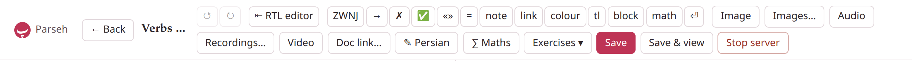

Special characters and the editor’s inserts
A handful of characters mean something to the studio. Each has a button in the editor’s toolbar, in the group of buttons that insert at the cursor, so you never have to find it on a keyboard.
| Character | What it does | Button |
|---|---|---|
✗ (or ❌) | marks the form after it as wrong: a red cross, and the form in red | ✗ |
✅ | a green tick, on its own | ✅ |
→ (or ->) | an arrow | → |
⏎ | breaks the line, inside a paragraph | ⏎ |
| the zero-width non-joiner | keeps two letters of a Persian word apart without a space | ZWNJ |
« » | guillemets, as typed | «» |
1. A wrong form: ✗#
A linguist marks a form that does not exist; the dialect does it with ✗ straight before the form. The cross is drawn as a red ❌, and the form after it is set in the same red.
A cross marks a wrong form and a tick the right one: ✗من میرود, ✅ من میروم, *I go*.A cross marks a wrong form and a tick the right one: ❌من میرود, ✅ من میروم, I go.
- What counts as the form: a run of the target language — several words, if they are one run — or a word in Latin letters (the accented letters of Western European languages, apostrophes and hyphens included), or a mark straight after the cross,
✗[…]{tl}. In a Latin-script target, write the wrong form as a marked run,✗[andato]{tl}: then all of it is red, whatever its letters. - With a space after it, the cross alone is red and the word after it is left as it is.
- The red cannot be changed. A colour or a transliteration on the form (
✗[کتابا]{teal}) is dropped, and the hover tools do not offer the form: the wrong-form red is the studio’s, kept apart from the five colours on purpose. ❌typed in the source is the same mark as✗.- A gloss after it counts. A wrong form is still a word of the target language:
✗کتابا = *wrong*greys its=and puts the wrong form into the glossary like any gloss (Glosses). To give its meaning without that, write the meaning in brackets, with no=.
Typed as ❌: ❌کتابا; a Latin word: ✗goed; a space after the cross: ✗ کتاب.Typed as ❌: ❌کتابا; a Latin word: ❌goed; a space after the cross: ❌ کتاب.
target: it✗[andato]{tl} is wrong, ✅ [andata]{tl} is right, after [essere]{tl}; and ✗ alone.❌andato is wrong, ✅ andata is right, after essere; and ❌ alone.
On paper the cross is a red ✗ and the form is red; in a PDF printed Black and white, both are black.
2. A right form: ✅#
✅ is a green tick that stands on its own: it colours nothing after it. On the screen it is the emoji; on paper, a green ✓. The ✅ button types it with a space after it.
3. The arrow: → and ->#
→ is drawn as an arrow in the serif face of the prose, and ->, typed with a hyphen and a greater-than sign, becomes the same arrow on the screen.
infinitive → past stem, and a -> b as well.infinitive → past stem, and a → b as well.
On paper both are the same arrow too. The editor’s → button types the character itself, which reads as an arrow in the source as well.
4. The line break: ⏎#
The studio joins the lines of a paragraph, so a line break is asked for with ⏎. It works in a paragraph, a list item, a table cell, a caption, inside a […]{tl} stretch, and in the long form of a target-language block, at the end of each line but the last. Spaces round it do not matter.
A sign stacks its words:⏎ورود *vorud*, entrance⏎خروج *xoruj*, exitA sign stacks its words:
ورود vorud, entrance
خروج xoruj, exit
5. The zero-width non-joiner#
Persian writes some words in two parts that touch without joining: the present prefix می stays apart from its verb, the plural ها from its noun, without a space between. The character that does it — the zero-width non-joiner, U+200C, the Persian nim-fāsele or half space — is invisible, and most keyboards hide it; the ZWNJ button types one at the cursor.
With it: میروم, کتابها. Without it: میروم, کتابها.With it: میروم, کتابها. Without it: میروم, کتابها.
It is part of the word it sits in, so a run of Persian goes on through it; Arabic and Hindi runs take it in too (and Hindi its twin, the zero-width joiner). A transliteration writes it as a hyphen: میروم is mi-ravam.
6. Guillemets#
The «» button types a pair of guillemets with the cursor between them, for the quotation marks of Persian, Arabic, French and others. They are ordinary punctuation: they are not part of a Persian or Arabic run, so a paragraph with them is never a display line (it may still be a target-language paragraph).
He said «سلام» and left.«سلام» گفت و رفت.He said «سلام» and left.
«سلام» گفت و رفت.
7. Emoji#
Emoji are shown on the screen. The PDF’s fonts have none, so on paper a […]{tl} block drops them, and elsewhere they print as nothing: keep them out of a document you mean to print.
Well done 🎉, and inside a block: [آفرین 🎉]{tl}Well done 🎉, and inside a block: آفرین 🎉
8. Every button that types the dialect#
The editor’s toolbar, from left to right. The first group inserts at the cursor; the buttons after it add files or open a box that writes the Markdown for you.

The editor’s toolbar, for a Persian document: the ✎ button is named after the document’s language, and kana appears only in a Japanese one.
| Button | What it types or does |
|---|---|
| ↺ ↻ | undo and redo — the editor’s own history, so its buttons’ edits are undone too |
| ⇤ RTL editor / ⇥ LTR editor | writes the whole source right to left, or back; the preview is unchanged (Front matter) |
| ZWNJ | the zero-width non-joiner |
| → | → |
✗ | ✗ |
| ✅ | ✅ and a space |
| «» | «», the cursor between them |
| = | = with its spaces, for a gloss (Glosses) |
| note | asks for a footnote’s name and text; the citation at the cursor, the text among the notes in reading order (Footnotes) |
| link | [testo](https://), the cursor after https:// |
| colour | []{teal}, the cursor between the brackets |
| tl | the selection wrapped in […]{tl} (the long form over several lines), or an empty one |
| kana | the selection wrapped in […]{kana:}, the cursor ready for the reading — Japanese documents only |
| block | the selection wrapped in […]{la}, or an empty one |
| math | the selection wrapped in […]{math}, or an empty one |
⏎ | ⏎ |
| Image, Images… | upload a picture and put its line in, ; list the document’s pictures, a click putting one in again |
| Audio, Recordings… | upload recordings and put their lines in, ; list them, and the clips cut from books and videos |
| Video | asks for a YouTube address; writes @[didascalia](…) on a line of its own |
| Doc link… | picks another document of the library and writes […](doc:Its name) |
| ✎ and the language’s name | a box that writes a […]{tl} block in the language’s direction and face (Target-language text) |
| ∑ Maths | a box that writes a formula, in the line or on its own (Mathematics) |
| Exercises ▾ | Add exercise…, Generate with LLM…, Load from a deck… — Writing exercises says more |
Two of the words the buttons type are Italian placeholders, for you to replace: testo, text, in a link, and didascalia, caption, at the start of every picture, recording and video line the editor writes — from Image, Audio and Video, from a click in Images… or Recordings…, and from a picture or recording dropped on the source. It is left selected, so what you type next replaces it. Two lines get a caption of their own instead: a pasted picture, when you fill in the paste dialog’s Caption (optional), and a clip from the tray, which takes the words it says. Pictures and recordings belong to the document’s own folders, so Image and Audio ask for the document to be saved first.